Baltimore Travel Guide
City known for its rich history, diverse culture, and picturesque waterfront. Visitors can explore historic neighborhoods like Fells Point and Inner Harbor, enjoy fresh seafood at local restaurants, and visit iconic landmarks such as Fort McHenry and the National Aquarium.
Places to See in Baltimore
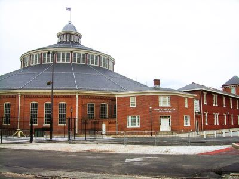
Des Moines Guy, CC BY-SA 3.0, via Wikimedia Commons; Image Size Adjusted

B and O Railroad Museum
Railroad heritage museum featuring historic locomotives, train rides, and exhibits chronicling the evolution of American railroading.
Danksergeant15, CC BY-SA 4.0, via Wikimedia Commons; Image Size Adjusted

Baltimore City Hall
Monumental 19th‑century civic building featuring a grand central dome, historic council chambers, and ornate interiors designed to house municipal government.

Dsmspence, CC BY-SA 3.0, via Wikimedia Commons; Image Size Adjusted

Baltimore Inner Harbor
Waterfront district featuring promenades, historic harbor basins, cultural attractions, and public gathering spaces developed around a revitalized maritime core.
Jeff P from Berkeley, CA, USA, CC BY 2.0, via Wikimedia Commons; Image Size Adjusted
.jpg){kind=link}
Baltimore Museum of Art
Major art museum featuring global collections, contemporary exhibitions, and sculpture gardens with free general admission.
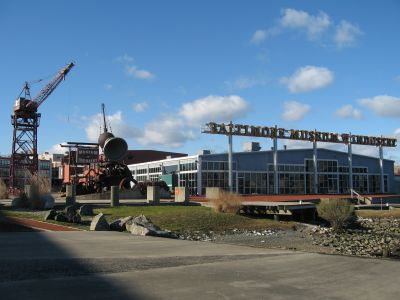
Jeff P from Berkeley, CA, USA, CC BY 2.0, via Wikimedia Commons; Image Size Adjusted
Baltimore Museum of Industry
Interactive museum featuring hands-on exhibits, working artifacts, and immersive displays that explore the evolution of industry and labor through time.
PointsofNoReturn, CC BY-SA 4.0, via Wikimedia Commons; Cropped and Image Size Adjusted

Baltimore Painted Ladies
Row of vibrantly painted Victorian-style rowhouses known for their colorful facades and community-driven beautification efforts.
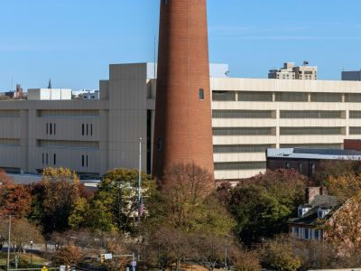
Jeff P from Berkeley, CA, USA, CC BY 2.0, via Wikimedia Commons; Image Size Adjusted
Baltimore Phoenix Shot Tower
Historic brick tower once used to manufacture lead shot by dropping molten metal from a great height into water.
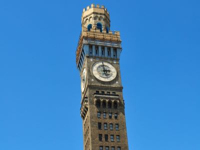
Jeff P from Berkeley, CA, USA, CC BY 2.0, via Wikimedia Commons; Image Size Adjusted
Bromo Seltzer Arts Tower
Historic clock tower transformed into a multi-level arts center featuring galleries, studios, and panoramic city views.
PointsofNoReturn, CC BY-SA 4.0, via Wikimedia Commons; Cropped and Image Size Adjusted
Dr. Samuel D. Harris National Museum of Dentistry
Museum dedicated to the history of dentistry, oral health science, dental innovation, and the professionals whose work has shaped modern dental care.
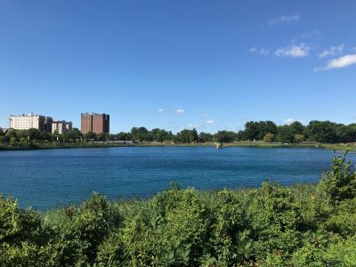
Jeff P from Berkeley, CA, USA, CC BY 2.0, via Wikimedia Commons; Image Size Adjusted
Druid Hill Park
Expansive historic park featuring a reservoir, zoo, conservatory, trails, and recreational facilities across 745 acres of green space.
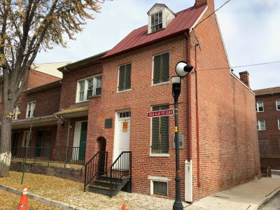
Jeff P from Berkeley, CA, USA, CC BY 2.0, via Wikimedia Commons; Image Size Adjusted
Edgar Allan Poe House and Museum
Preserved 19th-century rowhouse offering guided tours, exhibits, and artifacts related to the life and legacy of a renowned American author.
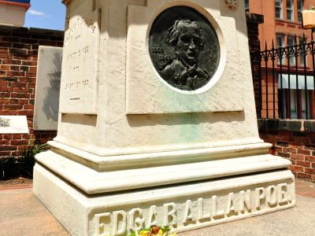
Jeff P from Berkeley, CA, USA, CC BY 2.0, via Wikimedia Commons; Image Size Adjusted
Edgar Allan Poe's Grave
Historic burial site and memorial honoring a renowned American writer, featuring interpretive signage and guided tours.
PointsofNoReturn, CC BY-SA 4.0, via Wikimedia Commons; Cropped and Image Size Adjusted
Federal Hill Park
Urban green space offering panoramic harbor views, historic monuments, and recreational amenities atop a prominent hill.

Jeff P from Berkeley, CA, USA, CC BY 2.0, via Wikimedia Commons; Image Size Adjusted
Fells Point
Charming waterfront neighborhood known for cobblestone streets, historic buildings, eclectic shops, and vibrant nightlife.
Jeff P from Berkeley, CA, USA, CC BY 2.0, via Wikimedia Commons; Image Size Adjusted
George Peabody Library
Monumental research library featuring soaring cast‑iron balconies, historic book stacks, and a skylit atrium preserved for scholarship and public viewing.
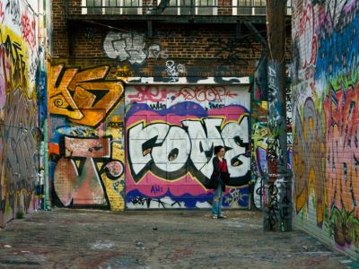
Jeff P from Berkeley, CA, USA, CC BY 2.0, via Wikimedia Commons; Image Size Adjusted
Graffiti Alley
Outdoor urban art space where street artists legally create vibrant graffiti murals on rotating walls in a narrow L-shaped alley.
PointsofNoReturn, CC BY-SA 4.0, via Wikimedia Commons; Cropped and Image Size Adjusted
Harbor Bridge Walk
Scenic pedestrian pathway winding along the Inner Harbor with waterfront views, public art, and access to major attractions and bridges.
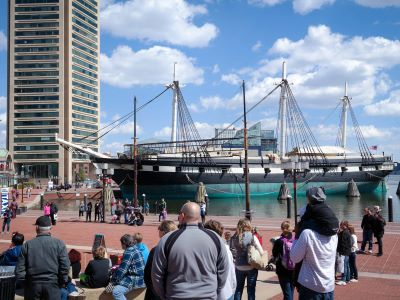
Jeff P from Berkeley, CA, USA, CC BY 2.0, via Wikimedia Commons; Image Size Adjusted
Historic Ships in Baltimore
Collection of historic naval vessels and a lighthouse offering immersive maritime exhibits and hands-on exploration of life at sea.
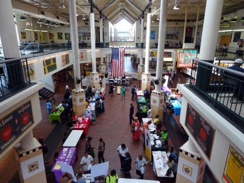
Jeff P from Berkeley, CA, USA, CC BY 2.0, via Wikimedia Commons; Image Size Adjusted
Lexington Market
Historic public market offering a diverse mix of local food vendors, small businesses, and community events in a vibrant indoor setting.
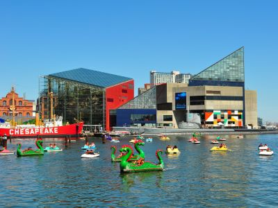
Jeff P from Berkeley, CA, USA, CC BY 2.0, via Wikimedia Commons; Image Size Adjusted
National Aquarium
Immersive aquatic experience featuring thousands of marine species, interactive exhibits, and conservation-focused programs across multiple themed habitats.
PointsofNoReturn, CC BY-SA 4.0, via Wikimedia Commons; Cropped and Image Size Adjusted
Observatory at Patterson Park
Restored 19th-century tower offering panoramic city views and hosting seasonal events and educational programs.
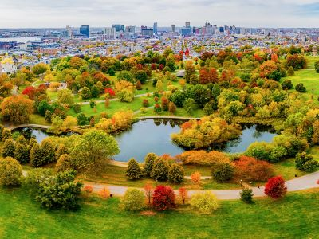
Jeff P from Berkeley, CA, USA, CC BY 2.0, via Wikimedia Commons; Image Size Adjusted
Patterson Park
Expansive urban park featuring historic landmarks, athletic fields, gardens, and recreational facilities for all ages.
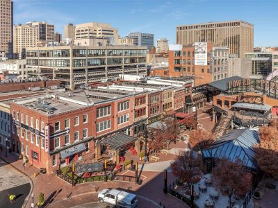
Jeff P from Berkeley, CA, USA, CC BY 2.0, via Wikimedia Commons; Image Size Adjusted
Power Plant Live
Entertainment and dining complex featuring bars, restaurants, live music, and nightlife in a vibrant open-air setting.
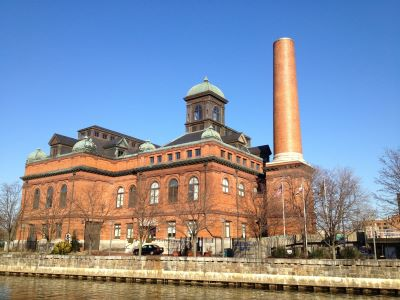
Jeff P from Berkeley, CA, USA, CC BY 2.0, via Wikimedia Commons; Image Size Adjusted
Public Works Experience
civic learning center featuring hands‑on exhibits that explain how water, waste, and transportation systems operate and support daily urban life.
PointsofNoReturn, CC BY-SA 4.0, via Wikimedia Commons; Cropped and Image Size Adjusted
Reginald F. Lewis Museum
Museum dedicated to African American history and culture featuring permanent and rotating exhibitions, historical artifacts, contemporary art, educational programs, and stories highlighting Maryland's Black experience.
PointsofNoReturn, CC BY-SA 4.0, via Wikimedia Commons; Cropped and Image Size Adjusted
Top of the World Observation Level
Observation deck offering panoramic views of the city skyline, harbor, and surrounding landmarks from the 27th floor of a pentagonal skyscraper.
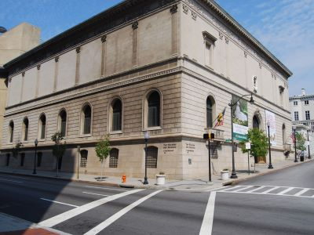
Jeff P from Berkeley, CA, USA, CC BY 2.0, via Wikimedia Commons; Image Size Adjusted
Walters Art Museum
World-class museum housing a vast collection of art and artifacts spanning millennia, with free admission and rotating exhibitions.
Jeff P from Berkeley, CA, USA, CC BY 2.0, via Wikimedia Commons; Image Size Adjusted
Washington Monument
Neoclassical column monument with a spiral staircase and observation deck, commemorating the first U.S. president.
Overview
Baltimore is the largest city in Maryland, with about 570,000 residents, a historic port on the Patapsco River and the Chesapeake Bay known as "Charm City." It is famous for the Inner Harbor, Fort McHenry and the birth of "The Star-Spangled Banner," for blue crabs and crab cakes, for Edgar Allan Poe, for the Orioles and Ravens, and for neighborhoods of rowhouses with their own personalities. The Johns Hopkins University and Hospital, the Peabody Institute and many other institutions make it a center of medicine, education and the arts.
Visitors come to Baltimore to see the National Aquarium and the historic ships at the Inner Harbor, walk the cobblestone streets of Fells Point and Little Italy, visit free world-class art museums and watch a baseball game at Camden Yards. The city is only about 40 miles from Washington, D.C., and is easy to reach by Amtrak and MARC trains, so it is often visited as a weekend trip.
History
Baltimore was founded in 1729 and named after the Lords Baltimore, the proprietors of the Maryland colony. It grew into a major port exporting tobacco and grain, and fast "Baltimore clipper" ships were built here. The Continental Congress met in Baltimore from December 1776 to March 1777. During the War of 1812, Fort McHenry withstood a British bombardment on September 13-14, 1814, inspiring Francis Scott Key to write the poem that became the national anthem in 1931. The Baltimore and Ohio Railroad, begun in 1827, was the first common-carrier railroad in the United States, and the Pratt Street riot of April 19, 1861 was the first bloodshed of the Civil War. A great fire in February 1904 destroyed about 1,500 buildings downtown. In the 20th century steel, shipbuilding and manufacturing declined, and the city redeveloped its waterfront with Harborplace in 1980 and Oriole Park at Camden Yards in 1992. In March 2024 a cargo ship struck the Francis Scott Key Bridge, causing it to collapse, and a replacement is planned.
Sightseeing and Popular Landmarks
The Inner Harbor is the center of tourism, with a waterfront promenade, restaurants, paddle boats, the National Aquarium, the Historic Ships including the 1854 USS Constellation, and the Top of the World observation level. Fort McHenry, the star-shaped fort where the flag flew in 1814, is a National Monument. Fells Point is a historic waterfront neighborhood of taverns and shops, Federal Hill Park has the best view of the harbor, and the Washington Monument in Mount Vernon (completed in 1829) was the first major monument to George Washington. Other landmarks include City Hall, the Bromo Seltzer Arts Tower, the Phoenix Shot Tower, Lexington Market, Charles Village's Painted Ladies and Graffiti Alley.
Culture and Museums
The Walters Art Museum and the Baltimore Museum of Art, both with free admission, house collections from ancient Egypt to modern art, including the Cone Collection of Matisse paintings. The B&O Railroad Museum has one of the best collections of historic locomotives in the country, and the Reginald F. Lewis Museum tells the story of African American life in Maryland. The Baltimore Museum of Industry, the National Museum of Dentistry and the American Visionary Art Museum are some of the city's quirkier museums. Poe's life is remembered at the Edgar Allan Poe House and Museum and his grave, and the George Peabody Library has one of the most beautiful reading rooms in America. The Baltimore Symphony Orchestra, the Hippodrome Theatre and the Lyric present concerts and shows, and crab cakes, steamed crabs and Berger cookies are local favorites.
Parks
Druid Hill Park is a 745-acre Victorian park with the Maryland Zoo and the Howard Peter Rawlings Conservatory. Patterson Park, known as "Baltimore's Central Park," has an 1891 pagoda observatory (Observatory at Patterson Park), a boat lake and sports fields. Federal Hill Park has views of downtown and the harbor, and Cylburn Arboretum is a quiet garden and nature preserve. Gwynns Falls/Leakin Park is one of the largest urban forests in the country, and the Waterfront Promenade follows the harbor for about seven miles around neighborhoods such as Canton and Fells Point.
Sports
Baltimore has two major league teams. The Baltimore Orioles (MLB) play at Oriole Park at Camden Yards, the 1992 ballpark that sparked the "retro ballpark" style, and won World Series titles in 1966, 1970 and 1983. The Baltimore Ravens (NFL) play at M&T Bank Stadium next door, and won the Super Bowl after the 2000 and 2012 seasons. The Ravens were created in 1996 when the Cleveland Browns moved to Baltimore, after the Colts had left for Indianapolis in 1984. Johns Hopkins is a lacrosse power, and the Preakness Stakes, the middle jewel of horse racing's Triple Crown, has traditionally been run at Pimlico Race Course each May.
Seasons and Weather
Baltimore has a humid subtropical climate. Summers are hot and humid, with highs in the upper 80s °F and sudden thunderstorms, and winters are cold, with highs in the 40s °F and occasional heavy snow. Spring and fall are the most comfortable seasons, with outdoor festivals and sports, and the summer months are the peak for blue crab season and Inner Harbor events. Waterfront areas such as Fells Point can flood during storms and very high tides, and winter snow can close roads and attractions for a day or two.
This article uses material from the Wikipedia article "Baltimore", which is released under the Creative Commons Attribution-Share-Alike License 3.0. Additional information from Visit Baltimore, the National Park Service: Fort McHenry National Monument and Historic Shrine, the Walters Art Museum, the Baltimore Museum of Art, Baltimore Orioles, Baltimore Ravens, National Weather Service Sterling and the official websites of the attractions mentioned.
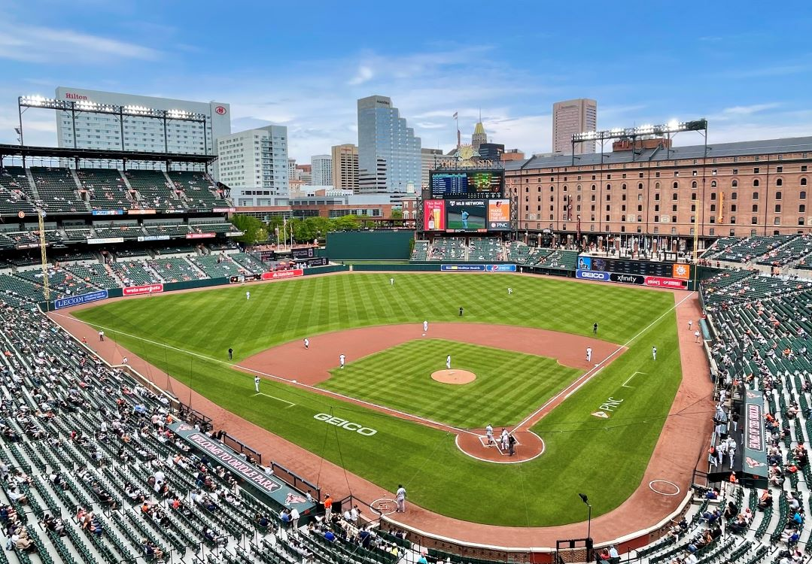
.jpg){kind=link}
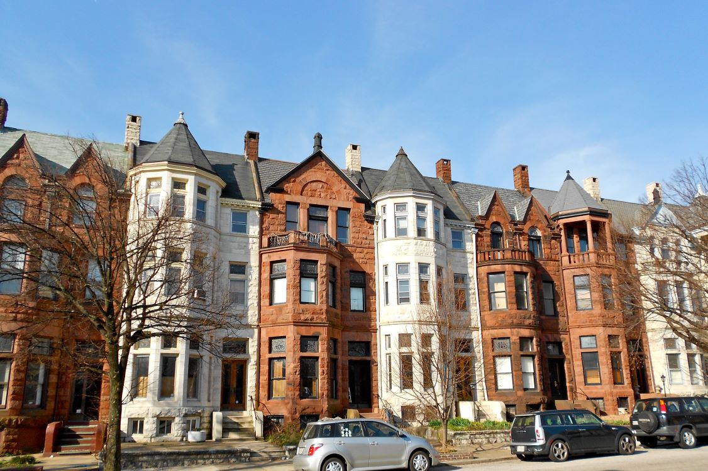